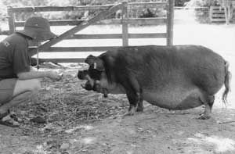

A pill in a jam sandwich is better than tons of antibiotic in the feed!
Antibiotics are not just given to sick animals, there are a number of different ways that they can be used:
Treatment - antibiotics given at full doses to kill or inhibit pathogens causing disease in individual animals.
Metaphylaxis - antibiotics given at full doses to kill or inhibit pathogens in groups of healthy animals exposed to disease. Sometimes necessary.
Prophylaxis - antibiotics given at low doses to groups of healthy animals to prevent disease. Ethically dubious - often a substitute for good husbandry.
Growth promotion - antibiotics given at low doses to make animals grow faster / use food more efficiently / produce more milk solids etc. Justifiable if husbandry is good and the drugs have no chance of producing cross resistance with drugs used for treatment in man or animals, otherwise highly unethical.
Antibiotic growth promoters are sometimes called production enhancers to differentiate them from hormonal growth promoters (= anabolic steroids). They are usually narrow-spectrum (usually Gram positive) antibiotics which are added to the feed in small quantities (up to 100 grams per tonne) or administered orally, sometimes in the water. They are most widely used in pig and poultry diets and increasingly in rations for intensively reared cattle, where they stimulate growth rate, improve feed conversion efficiency and reduce feed intake. They are usually not absorbed systemically.
These drugs may increase live weight gain by 3-5% in poultry, pigs and young, pre-ruminant calves (similar to gnotobiotic animals), and up to 10% in ruminating cattle. The resultant increased feed conversion efficiency reduces the time and quantity of (concentrate) feed required to rear the animal. There is no obvious benefit to grass-fed animals.
There is a continuum between drugs used to promote growth and drugs used to treat disease, despite the four groups mentioned above. Drug use to prevent disease - usually caused by poor husbandry - is tricky. If the drug use is successful, the animals stay healthy. Most drugs used for prophylaxis also have a growth promoting effect in healthy animals. Unfortunately, this type of use is widespread in NZ. There are regulatory differences in that growth promoters are regarded as safe enough for farmers to give unsupervised, but drugs for prophylaxis of disease require a vet’s prescription. If you presribe these drugs, be prepared to justify yourself.
These drugs are used by the ton. In 1998 in NZ, approximately 36 tonnes of antibiotics were used for growth promotion and prophylaxis compared to a total human use of about 40 tonnes of antibiotics. This is where the veterinary drug companies make a lot of their money, but there is pressure from several directions to reduce their use. Consumers are becoming jumpy about eating “contaminated” meat and these drugs have been banned in Scandinavia for this reason. When these drugs first became widely used in the 1960s, it was agreed that drugs used clinically in people would not be used as production enhancers in case of resistant bacteria transferring into people. This sensible idea has lapsed a bit over the years, but as highly resistant strains of bacteria emerge in response to indiscriminate use of antibiotics by the medical profession, there is pressure for the previously obscure production enhancers to become human clinical drugs (and thus not be used as production enhancers any more). Europe has recently banned avoparcin, bacitracin, virginiamycin, tylosin and spiramycin. In NZ, except for avoparcin which is also banned here, these are mainly used in pigs and poultry, which are not exported to Europe. Growth promoters as such are being phased out in NZ.
Growth promoters are not all bad. The most complete figures are from Denmark where there is an excellent surveillance system for both animals and people. Since growth promoters were banned there in 1997, the amount of therapeutic antibiotics used in animals has almost doubled. The incidence of salmonellosis and campylobacteriosis in people has also reached a record high. Coincidence?
Most of these agents are active against Gram positive bacteria and appear to act on bacterial populations in the gastrointestinal system. Most drugs are not absorbed from the gut to any great extent so the plasma drug concentrations are low. They must be given daily in the concentrate part of the diet or administered orally (daily drenching or bolus form - cattle only). When incorporated into feed blocks or licks, individual animals may receive widely varying doses.
In monogastric species (including pre-ruminant calves) the mode of action is not clear, but the drugs are thought to act by suppressing harmful bacterial metabolites, suppressing potential pathogenic organisms, or suppressing the competition between intestinal organisms. They may also act by altering the metabolic activity of the bacterial population, or enhancing the ability of the host to absorb nutrients from the gut.
Antibacterial agents which act in the rumen rather than the lower gut are called “rumen modifiers” or “rumen-active anaboles”. These compounds can be used once the rumen is fully functional (of no use in veal calves) and alter the pattern of rumen fermentation. Gram positive bacteria are major producers of the volatile fatty acids acetate and butyrate and methane gas. They decrease the microbial production of lactic acid and enhance the production of the gluconeogenic fatty acid propionate at the expense of acetate and butyrate. The reduction in the acetate-propionate ratio results in more available energy and substrate for glucose production by the liver. The reduced production of methane means less wastage of dietary carbon and energy through eructation. These drugs are probably more relevant to cattle fed on grain than grazing animals; in fact there is no good evidence that they are likely to work in cattle under the usual NZ conditions.
Any use of antibiotics exerts selection pressure for resistance in bacterial populations exposed to the drug. Giving antibiotics by the ton to food animals is thus a cause for concern. There is convincing evidence from Europe and the USA that antibiotic use in animals gives rise to resistance in human pathogens for a variety of Gram negative food poisoning organisms (E coli O157, Salmonella spp, Campylobacter spp.). The evidence for such resistance in human Gram positive pathogens such as methicillin resistant Staph aureus (MRSA) and vancomycin resistant enterococci (VRE) is not very convincing at the moment, although nearly all the VRE in NZ (people and chickens) seems to be the same clone. However, in sick people, the consequence of infections with these bacteria is often death. Some in the animal feed industry in the USA have expressed the view that since these are people in intensive care units who will probably die anyway, there is no need to change animal feeding practices.
used for growth promotion and/or prophylaxis
Interferes with cell wall production and has a similar spectrum of activity to penicillin. Resistance has been reported in Staphs, Streps and enterococci, but problems with breakpoints make interpretation difficult. It has been in use since the 1940s without clinically significant resistance problems, although on some farms Cl perfringens is no longer susceptible. Its main use in NZ is the prevention of necrotic enteritis (Cl perfringens) in broiler chickens. It may also have some effect against Lawsonia intracellularis in pigs. It is not used in peo?ple, and is too toxic to give parenterally. It just been re?clas?si?fied as a prescription animal remedy, and is not al?lowed to be used for growth promotion any more. It used to be used in milk replacers and min?er?al/ vitamin premixes, although there was no evidence that it was effective.
Particularly monensin, are used as coccidiostats (poultry and cattle), growth promoters in grain fed cattle (overseas) and to prevent bloat (cattle) and dysentry (pigs). Monensin produces a higher protein content in the milk, but reduced milk fat concentration (net result is still an increase in total milk solids) - at any rate in cattle fed rubbishy Australian diets. Resistance is not a problem. Ionophores are not used as antibacterials in people and are not prescription drugs. Remember that ionophores are toxic to horses.
The other drugs are used in much smaller quantities in NZ, but pose more of a risk if animal use leads to resistance in human pathogens.
An orthosomycin which blocks protein production. Mainly active against Gram positives, although also Borrelia and Legionella spp. It is active against a wide range of multi resistant staphylococci, enterococci and streptococci. Resistance has been reported in enterococci from animals and Strep pneumoniae from people. No resistance has been found in Cl perfringens. Resistance appears to develop slowly, both in vitro and in the field. Used as a growth promoter in pigs and chickens. It is also useful against necrotic enteritis in chickens. It compares favourably to vancomycin in vitro. The equivalent human drug was withdrawn from stage 3 trials and there are no drugs of this class currently in use in people. It is not a prescription drug and can still be used as a growth promoter here.
Was used as a growth promoter in chickens, pigs and cattle, and to prevent necrotic enteritis in chickens. It has also been used to improve milk production in dairy cows. It is closely related to vancomycin and teicoplanin which are used for MRSA in people. There appears to be complete cross resistance. Resistance may be transferred by VREs. The medical profession was very unhappy about the use of avoparcin in animals and it is no longer manufactured, so you should not come across it.
A nitroimidazole used to prevent swine dysentery and diarrhoea in pigs, chickens and turkeys. Resistance is rare, but there is cross resistance with metronidazole which is used in people. Dimetridazole is banned in Europe and the USA because it is carcinogenic, but is still used here. It is a prescription animal remedy.
Also known as bambermycin, moenomycin and Flavomycin, it interferes with cell wall production, mainly in Gram positives. Its spectrum is similar to benzylpenicillin, although MRSA has been shown to be susceptible. It is used as a growth promoter in broiler chickens, turkeys, pigs and calves. Its efficacy is dubious. Resistance does not seem to develop, although there is a suggestion that it can promote cross resistance to vancomycin. Most Clostridia and enterococci are intrinsically resistant, although the numbers in faeces can be reduced by flavophospholipol. There are also some reports that it can reduce shedding of E coli resistant to other drugs. There is in vitro evidence that it prevents plasmid transfer. It is not used in people and is not a prescription animal remedy.
Arsenic, copper and zinc have been used as growth promoters, particularly in pigs. Disposing of the faeces creates environmental problems - pig faeces on pasture can contain enough copper to kill sheep. Resistance can develop, and there is cross resistance with some antibiotics. Some E. faecium contain a plasmid which encodes for extra copper efflux pumps - the plasmid also contains resistance genes for tylosin and avoparcin. This means that changing from an antibiotic to copper for growth promotion can still select for antibiotic resistance.
Tylosin and related drugs such as tiamulin, are widely used in pigs and chickens as respiratory (enzootic pneumonia) and gut disease (swine dysentry) prophylactics. Other macrolides, particularly erythromycin and some of the newer drugs, are widely used in people. There is extensive, but not complete, cross resistance. All of these drugs require a prescription, you must make sure that you have a sound reason to give them before writing a prescription.
Oxytetracycline is often misused to prevent diarrhoea in calves and piglets, and respiratory diseases in poultry. It also has a growth promoting effect. It requires a veterinary prescription. Long courses of the drug require long withholding times.
Quinoxalines, such as carbadox and olaquindox, and related compounds such as dinitro-o-toluamide and nicarbazin, are used for diarrhoea (swine dysentry) and coccidiosis prophylaxis in pigs and chickens. They are mainly effective against Gram negatives. They are probably carcinogenic and are not used in people. They are not used much and there is little modern information about them. No prescription required.
A streptogramin closely related to the human drug dalfopristin / quinupristin (Synercid). It only kills Gram positives, including Staphs, Streps and enterococci, although some E faecium are intrinsically resistant. Resistance in enterococci develops quickly and has also been reported in Staphs. Virginiamycin was used as a growth promoter in pigs, chickens and turkeys, and is still used to prevent laminitis in horses. It can also prevent necrotic enteritis in chickens. Resistance to virginiamycin confers full resistance to dalfopristin / quinupristin, which has become the drug of last resort against MRSA and VRE in people. Virginiamycin is a prescription animal remedy which can only be used in horses, or for metaphylaxis of necrotic enteritis in chickens after culture and sensitivity indicates that nothing else would work, and MAF have been informed.
Unless the law changes, it is unlikely that vets will be involved in the use of growth promoters as such (but the WHO recommends that all antibiotics given to animals should be under veterinary control). NZFSA’s current policy in NZ is to phase out most growth promoters and to only license the (same) drugs for prophylactic use under veterinary prescription.
If you are involved in advising on growth promoters, or if you prescribe antibiotics to prevent disease, it is sensible to follow the guidelines below (based on BVA guidelines since the NZVA have not got their act together yet):
(1) Antibiotic growth promoters should only be used where husbandry and feeding are optimal - they should not be used to compensate for the growth retarding effects of disease, poor nutrition or poor housing.
(2) The inclusion rates and feeding instructions must be followed.
(3) There should be periodic review of the benefits of growth promoters as prices (feed, antibiotics & products) alter, as husbandry systems (housing, disease, management, nutrition etc) improve and as new knowledge becomes available.
(1) Antimicrobial usage should always be part of, and not a replacement for, an integrated disease control programme. Such a programme is likely to involve hygiene and disinfection procedures, biosecurity measures, management alterations, changes in stocking rates, vaccination, etc.
(2) Continued antimicrobial use in such control programmes should be regularly assessed as to effectiveness and whether their use can be reduced or stopped.
(3) Protocols should be agreed between the veterinary surgeon and the client as to when veterinary involvement is required in on-going disease conditions. These protocols must be regularly and frequently reviewed and updated.
(4) Protocols should be agreed and documented for treatment of all endemic conditions on the farm or other livestock-rearing or production premises. These protocols must be regularly reviewed and updated.
(5) Use of antimicrobials for the prevention of disease can only be justified where it can be shown that a particular disease is present on the premises, or is likely to become so, and that strategic antimicrobial use will prevent clinical outbreaks of that disease.
(6) Antimicrobials need to be used with care to maintain their efficacy. If possible, look for alternative methods of disease control (eg, vaccination) to reduce antimicrobial use.
(7) Should there be recurrence of disease following successful control of an outbreak, it will need to be investigated thoroughly to ascertain why this has occurred and the most suitable therapy to be used.
Check if there are withholding times and tell the farmer!